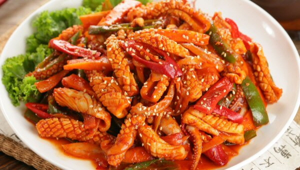

Korean Food Menu List
오징어 볶음

재료 : 오징어 2마리, 양파 1개, 다진파 6T, 당근 1/4개, 양배추 2줌(200g), 청양고추 2개,
식용유 2T, 고추장 3T, 고춧가루 4T, 간장 2T, 다진마늘 1T, 미림 1T,
올리고당 2T 후춧가루 소량 참기름 1T 깨 약간
①양파는 채썰고요~ 양배추는 굵게 썰어 찬물에 담궜다가 씻어 준비합니다.
당근은 스틱모양으로 길게 썰어주고요~ 청양고추는 어슷썰어줍니다.
다진파6T도 준비합니다.
②오징어는 껍질제거하지 않고 통째로 링모양으로 썰어줍니다.
오징어내장은 제거하시고요~ 다리부분의 눈알과 먹물 제거후씻어준후
먹기 좋게 링모양으로 썰어줍니다.
③양념장 만들기 : 그릇에 고추장3T.고춧가루4T.다진마늘1T.간장2T. 미림1T.올리고당2T.후춧가루소량를 섞어
양념장을 만들어줍니다.
④볶음팬에 다진파6T.식용유2T.손질한 오징어를 넣고 중불에서 30초정도 볶다가 준비한 양파를 넣고 30초정도 더 볶아줍니다.
⑤위 3번에서 준비한 양념장을 넣고요~ 준비한 양배추,청양고추,당근을 넣은후 골고루 섞어 중불에서 2분정도
나무주걱으로 저어주면서 볶아줍니다.
마지막에 참기름1T와 깨를 뿌려 마무리합니다.